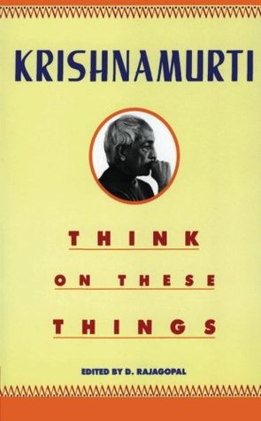
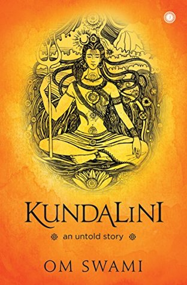
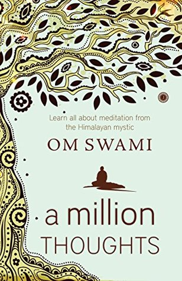

J. Krishnamurti
Rating: ★★★★☆ (4/5)
In this magnificent book, K talks about the true purpose of education and how the current educational system is in urgent need of a revolution. The true purpose of education is to provide students an environment that is not driven by fear, sets them free to investigate, inquire, rather than conforming them into a pattern so that they do not revolt against society or discover anything new.
By J. KrishnamurtiKundalini
Rating: ★★★★☆ (4/5)
In his book Kundalini: An Untold Story, Himalayan ascetic Om Swami unveils the enigmatic story of kundalini, the formless aspect of the Goddess or your primordial energy.These riveting anecdotes are based on his personal experience gained from years of intense meditation.Concept of Kundalini has for us only one use, that is, to describe our own experiences with the unconsciousß
By OM SwamiMind Without Fear
Rating: ★★★★☆ (4/5)
Gupta recalls his unlikely rise from orphan to immigrant to international icon as well as his dramatic fall from grace. He writes movingly about his childhood losses, reflects on the challenges he faced as a student and young executive in the United States.It is an extraordinary tale of human resilience and personal growth.
By Rajat GuptaA Million Thoughts
Rating: ★★★★☆ (4/5)
A Million Thoughts shows how to meditate correctly, how to practice various styles of meditation and how to become proficient in the many yogic practices that will lead to the final stage of samadhi — the ultimate spiritual self-fulfilment.
By OM SwamiAutobiography of a Yogi
Rating: ★★★★☆ (4/5)
Autobiography of a Yogi is at once a beautifully written account of an exceptional life and a profound introduction to the ancient science of Yoga and its time-honored tradition of meditation. A must read for all those who are brave enough to let their thoughts and ideologies be challenged.
By Paramhans YoganadProject Hail Mary

Rating: ★★★★☆ (4/5)
Ryland Grace is the sole survivor on a desperate, last-chance mission—and if he fails, humanity and the Earth itself will perish.All he knows is that he's been asleep for a very, very long time. And he's just been awakened to find himself millions of miles from home, with nothing but two corpses for company.
By Andy Wier